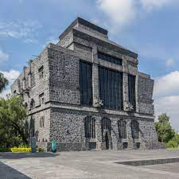
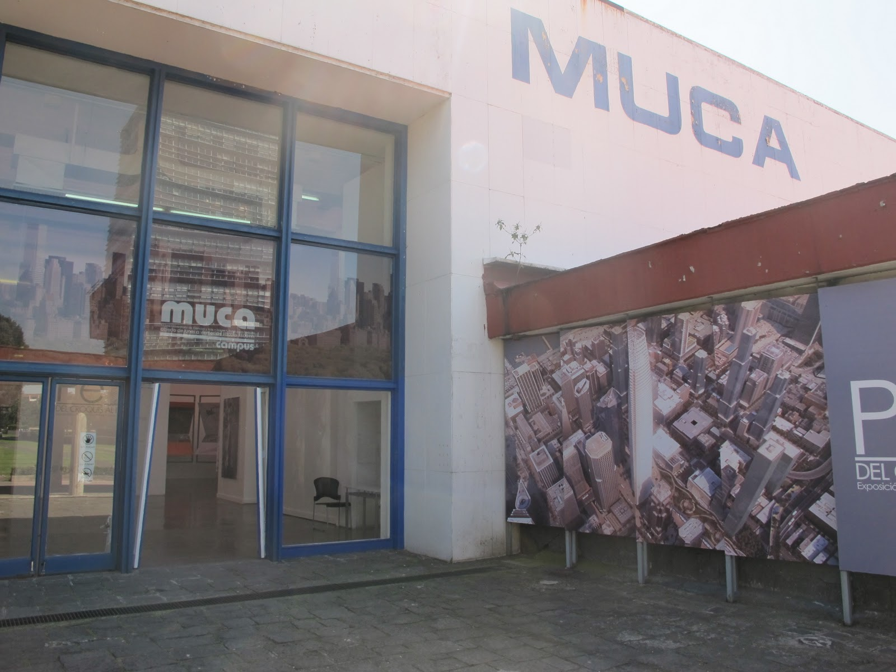
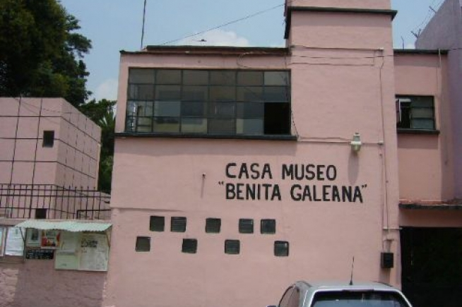
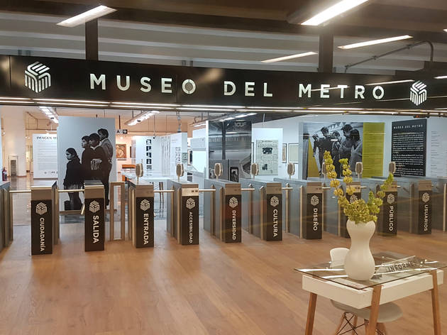

En esta alcaldia solo ubicaremos un total de 12 museos, cabe recalcar que se encuentran recintos importantes de figuras ilustres como lo fueron Diego Rivera, En el Museo Diego Rivera Anahuacalli se exhiben permanentemente piezas de arte prehispánico representativas de las diferentes culturas que florecieron en Mesoamérica y que Rivera coleccionóa lo largo de su vida. De igual forma que el Museo Universitario de Ciencias y Artes (MUCA), este recinto promueve y difunde exposiciones multidisciplinarias que pueden incluir innovadores formatos como el video, la instalación, el performance y el arte digital, de los cuales considero destacar son los siguientes.

Museo Diego Rivera-Anahuacalli
Horarios y costos
Abierto al público de martes a domingo de 11 a 16 hrs.
Admisión general: $100
Admisión nacional: $80
Estudiantes de primaria, secundaria, preparatoria, universidad y maestros: $35
Adultos mayores, niños de preescolar y escuelas primarias oficiales: $20
Entrada gratuita a menores de 6 años y personas con capacidades diferentes
Entrada gratuita a vecinos de las colonias San Pablo Tepetlapa, El Reloj, La Candelaria, Ruiz Cortines, Santa Úrsula, Díaz Ordaz y El Rosario al presentar credencial de elector.
Entrada gratuita al presentar credencial ICOM
Cuota voluntaria
Museo 150
Col. San Pablo Tepetlapa
CP 04620
Coyoacán, Coyoacán, Ciudad de México
Tels.: 55 5617 4310, 5617 3797, 5617 6874

Museo Universitario de Ciencias y Artes (MUCA)
Horarios y costos
Abierto al público de martes a sábado de 10 a 18 hrs.
Entrada libre
UNAM
Av. Insurgentes 3000, Cto. Universitario, frente a Rectoría
Cd. Universitaria
CP 04510
Coyoacán, Coyoacán, Ciudad de México
Tels.: (55) 5622 0212

Casa Museo Benita Galeana
Horarios y costos
Abierto al público de lunes a viernes de 9 a 15 hrs.
Entrada libre
IAlcaldía Benito Juárez
Cda. Zutano 11
Col. Segunda del Periodista
CP 03620
Benito Juárez, Benito Juárez, Ciudad de México
Tels.: 55 5609 1687

Museo del Metro
Horarios y costos
Martes a domingo de 10:00 a 20:00 hrs.
Sistema de Transporte Colectivo Metro
Av. Revolución esq. Extremadura
Col. Insurgentes Mixcoac
CP 03920
Benito Juárez, Benito Juárez, Ciudad de México
Tels.: 55 5627 4549